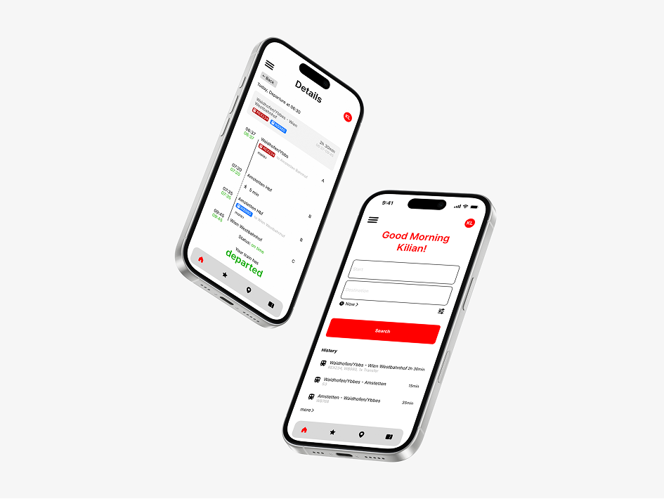
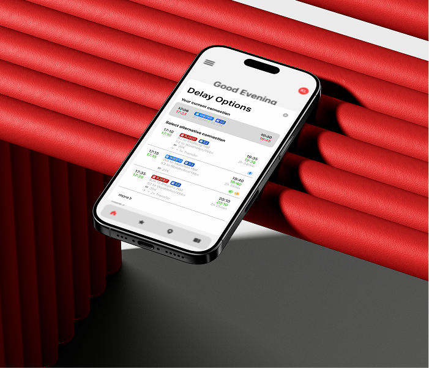
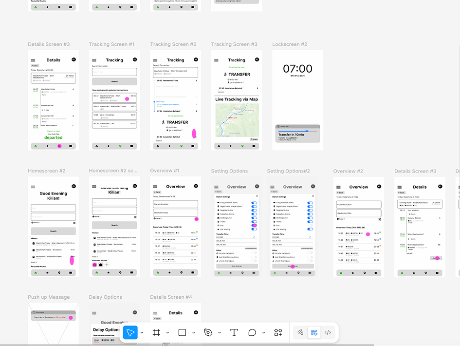
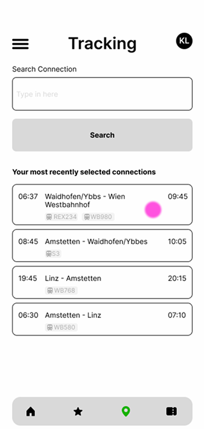
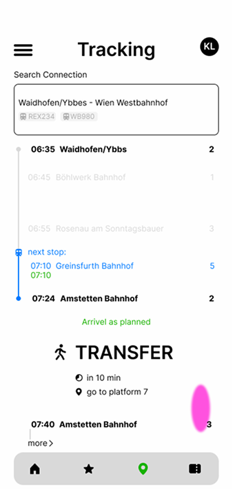
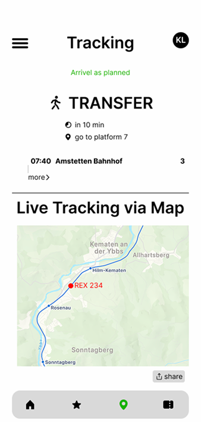

INTERFACE
DESIGN
ÖBB Scotty APP
REDESIGN
As part of my interface design work, I developed
wireframes and concept improvements for the ÖBB
Scotty app.

I focused on streamlining user flows and redesigning select key screens, emphasizing clarity, usability, and a modernized visual approach.
/ 09 - 2025





Supervision: Thomas Hitthaler